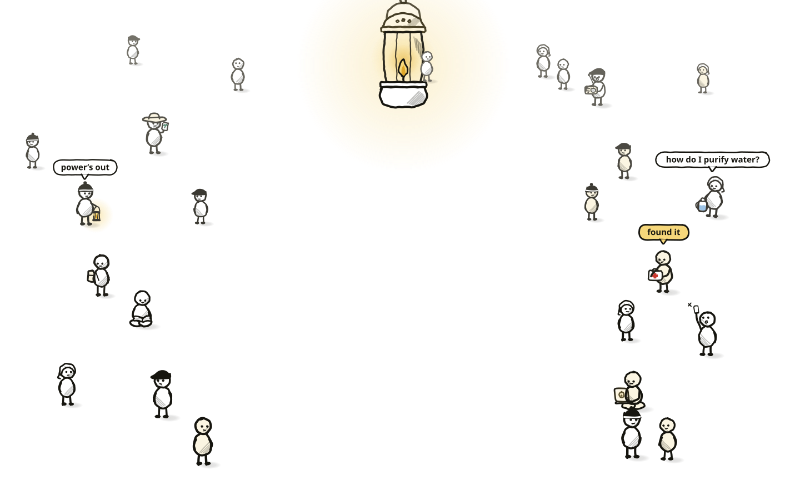

Lastbook
Survival and repair guides, medical books, encyclopedias and a map. All on your own computer, for when the internet or power is gone.
Lastbook runs on Mac and Windows computers. It doesn’t run on iPhone, iPad or Android. Open lastbook.org on your computer.
Free · Mac: Apple M1 or newer, macOS 14 or newer · Windows 10 or 11, 64-bit
Not sure? How to check your computer
Then get the library (8.2 GB, needs about 17 GB free).